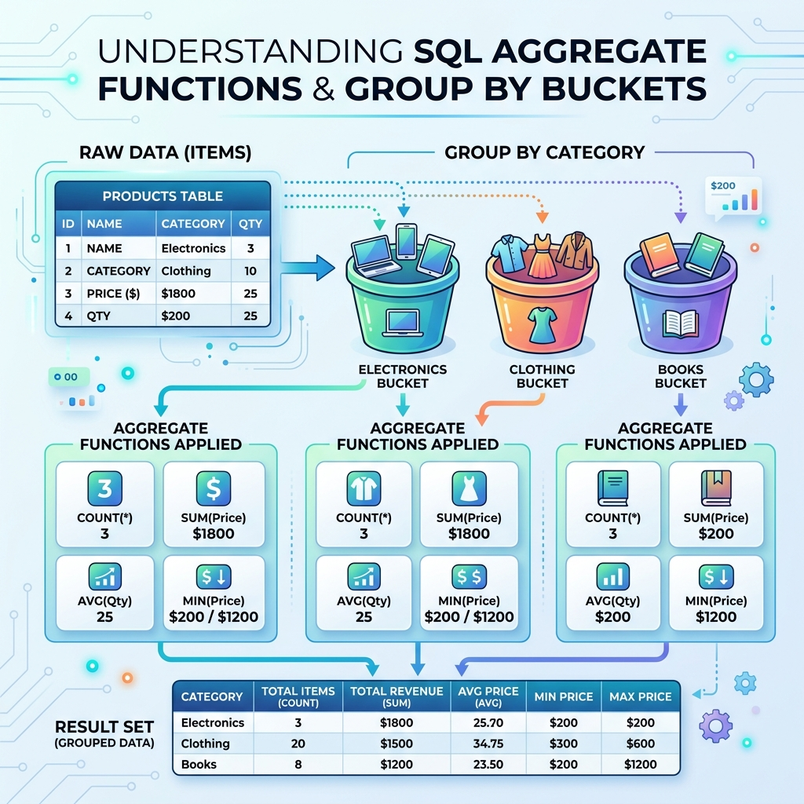

သင်ခန်းစာ ၁၃ — Data တွက်ချက် စုစည်းခြင်း (Aggregations & GROUP BY)

Aggregate Functions နန့် GROUP BY ကို အသုံးပြုပနာ Data များကို ရေတွက်ခြင်း (Count)၊ ပေါင်းလဒ် ရှာခြင်း (Sum)၊ ပျမ်းမျှ တွက်ခြင်း (Average) နန့် အုပ်စုဖွဲ့ခြင်းများ ပြုလုပ်နည်းကို လေ့လာသွားပါဖို့။
ခန့်မှန်း ကြာချိန် - မိနစ် ၂၅
🎨 Aggregate Functions visual Summary
┌─────────────────────────────────────────────────────────────────────────┐
│ AGGREGATE FUNCTIONS ILLUSTRATION │
├─────────────────────────────────────────────────────────────────────────┤
│ Data အတန်းများစွာ ➔ အနှစ်ချုပ် တန်ဖိုးတစ်ခု ထွက်လာပုံ: │
│ │
│ +----------+--------------------+ │
│ | price | product | │
│ +----------+--------------------+ │
│ | $999.99 | Laptop | │
│ | $29.99 | Mouse | │
│ | $199.99 | Keyboard | │
│ +----------+--------------------+ │
│ │
│ COUNT(*) ➔ 3 (အတန်း စုစုပေါင်း အရေအတွက်) │
│ SUM(price) ➔ $1229.97 (စျေးနှုန်း အားလုံး ပေါင်းလဒ်) │
│ AVG(price) ➔ $409.99 (ပျမ်းမျှ စျေးနှုန်း) │
│ MIN(price) ➔ $29.99 (အသက်သာဆုံး စျေး) │
│ MAX(price) ➔ $999.99 (စျေးအကြီးဆုံး) │
└─────────────────────────────────────────────────────────────────────────┘
🔢 တွက်ချက်သည့် Functions (၅) မျိုး
| Function | ပြုလုပ်ပေးသော အရာ | ဥပမာ |
|---|---|---|
COUNT() | အတန်း အရေအတွက် ရေတွက်သည် | COUNT(*) |
SUM() | တန်ဖိုးများကို ပေါင်းပေးသည် | SUM(price) |
AVG() | ပျမ်းမျှ တန်ဖိုး တွက်သည် | AVG(price) |
MIN() | အငယ်ဆုံး တန်ဖိုးကို ရှာသည် | MIN(price) |
MAX() | အကြီးဆုံး တန်ဖိုးကို ရှာသည် | MAX(price) |
🗂️ GROUP BY — အုပ်စုဖွဲ့ပနာ တွက်ချက်ခြင်း
Data များကို အမျိုးအစားအလိုက် အုပ်စုဖွဲ့ပနာ တွက်ချက်လိုသည့်အခါ GROUP BY ကို သုံးပါတယ် -
SELECT category, COUNT(*) AS product_count
FROM products
GROUP BY category;
┌──────────────── GROUP BY Bucket Method visual ─────────────────┐
│ │
│ Products Data ➔ Category အလိုက် အံဆွဲများထဲ ခွဲထည့်လိုက်ပုံ: │
│ │
│ 🗂️ Electronics Bucket: (Laptop, Mouse, Keyboard) ➔ Count: 3 │
│ 🗂️ Clothing Bucket: (T-Shirt, Jeans) ➔ Count: 2 │
│ 🗂️ Footwear Bucket: (Sneakers) ➔ Count: 1 │
└─────────────────────────────────────────────────────────────────┘
⚖️ WHERE နန့် HAVING ခြားနားချက် visual Diagram
┌─────────────────────────────────────────────────────────────────────────┐
│ WHERE vs HAVING │
├─────────────────────────────────────────────────────────────────────────┤
│ │
│ [ ၁။ FROM ] ➔ Table မှ Data များ ယူသည် │
│ │ │
│ ▼ │
│ [ ၂။ WHERE ] ➔ အတန်း တခုချင်းစီကို အလျင် စစ်ထုတ်သည် (Group မဖွဲ့မီ) │
│ │ │
│ ▼ │
│ [ ၃။ GROUP BY ] ➔ အုပ်စု ဖွဲ့သည် │
│ │ │
│ ▼ │
│ [ ၄။ HAVING ] ➔ တွက်ချက်ပြီး ရလဒ် အုပ်စုများကို စစ်ထုတ်သည် (Group ဖွဲ့ပြီး)│
│ │
└─────────────────────────────────────────────────────────────────────────┘
-- Product အရေအတွက် ၂ ခုထက် ပိုသော Category များကိုသာ ရှာရန်
SELECT category, COUNT(*) AS count
FROM products
GROUP BY category
HAVING COUNT(*) > 2;
📝 လေ့ကျင့်ခန်း (Exercise)
၁. အော်ဒါ စုစုပေါင်း အရေအတွက်ကို ရေတွက်ပါ - SELECT COUNT(*) FROM orders;
၂. ပျမ်းမျှ အော်ဒါ စျေးနှုန်းကို တွက်ပါ - SELECT AVG(total_amount) FROM orders;
၃. ဝယ်သူ တစ်ယောက်စီ၏ ဝယ်ယူမှု စုစုပေါင်း ပမာဏကို SUM နန့် GROUP BY သုံးပနာ ထုတ်ပြပါ။
➡️ နောက်ထပ် သွားရမည့် အဆင့်
ဂုဏ်ယူပါတယ်။ သင်ခန်းစာ ၁၃ ခုလုံး တတ်မြောက်သွားပြီဖြစ်လို့ အဆုံးသတ် သင်ခန်းစာဖြစ်သော Database ကို Backup သိမ်းဆည်းခြင်းနန့် ပြန် Restore လုပ်နည်းကို လေ့လာကြပါစို့။